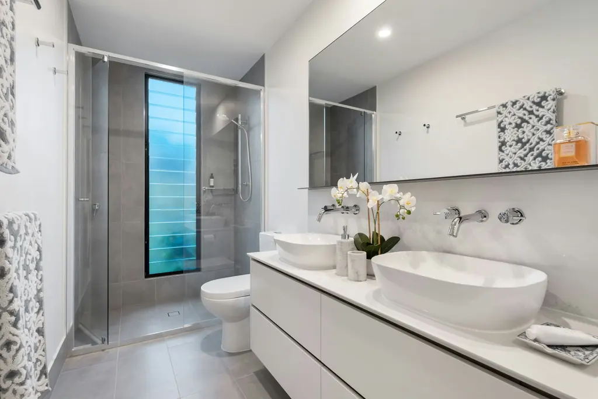
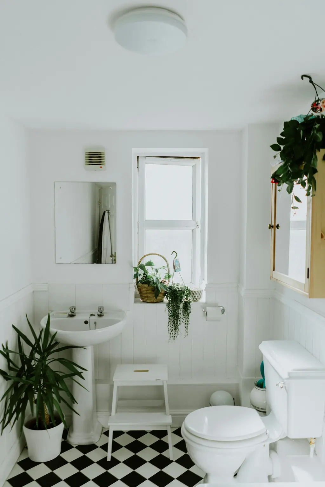

Project inspiration.
Explore windows and bathrooms to find the look you love — then start your own project in a few minutes.
Project gallery
Representative imagery shown for layout. Replace with photos of the client’s completed projects before launch.
Compare the transformation.



